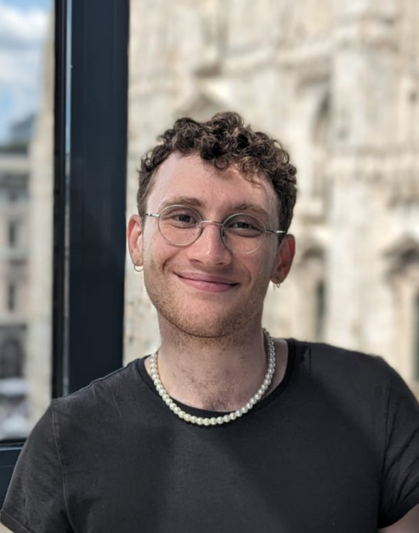

Email: raphael.wargon@college-de-france.fr or raphael.wargon@psemail.eu
Office: Office 516, 3 rue d'Ulm, 75005 Paris or R2-14, 48 boulevard Jourdan, 75014 Paris
Hi! Welcome to my website. I'm a PhD Candidate at the Paris School of Economics and Collège de France at the Farhi Innovation Lab, under the supervision of Philippe Aghion in applied microeconomics. I work on the labour market for researchers in France, as well as the impact of political pressures on research.
Fields: Economics of innovation, political economy, labour economics, bibliometrics.
Seminar: The Farhi Innovation lab's PhD students co-organise the Brown Bag Seminar of Innovation with Insead once a month. It is held both online and physically at the Collège de France, 3 rue d'Ulm, on Friday mornings. You will find all of the information about upcoming sessions on the PSE website. Feel free to contact Luc Paluskiewicz, Claudia Nobile or me if you have any questions on the seminar or want to present.